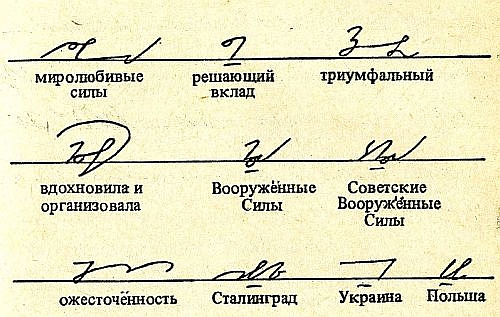

International
InternationalKonkurs stenograficzny - rozstrzygnięcie
2012-03-12 | autor: flamenco108Dopraszam się wybaczenia Szanownych Uczestników naszego małego konkursu, ale zachorzałem i przez pewien czas nie byłem zdolny do pełnienia funkcji jurora. Była to choroba tak zaraźliwa, że infekcje przenosiły się nawet przez pingi. Aktualnie poziom zakaźności już się obniżył, do zarażenia się potrzebna jest co najmniej rozmowa telefoniczna.
Przypomnę, że nagrodą jest odbitka ręcznego odpisu (anonimowego, pisanego piórem w kajecie produkcji anglosaskiej, jak wywnioskowałem z podglądania papieru pod światło, zresztą papieru niezłej jakości) pierwszego artykułu dotyczącego stenografii, jaki opublikowano po polsku.
Zacznę od zrekapitulowania poszczególnych zgłoszeń, abyśmy wiedzieli, co właściwie oceniam, gdzie, jak i czemu:
Autorka bloga stenograficzny.blogspot.com Mar 5, 2012 01:51 PM
Stawiam na dwudziestolecie międzywojenne, zwłaszcza na pierwszą dekadę, a konkretnie drugą połowę pierwszej dekady, tj. 1924-1929. Strzelałabym, że to rok 1926, ale to już zupełnie w ciemno.
Anonimowy Mar 6, 2012 01:46AM
Porównując te daty: http://bazy.oss.wroc.pl/lwow/pozycja.php?id=2532&s=7&search=s% i to: http://www.atticus.pl/index.php?pag=poz&id=76829 Obstawiam 1920. Miwilemutetelo.
Cokolwiek by to ostatnie nie miało znaczyć.
Licznie zgromadzeni uczestnicy wytypowali zatem dwie daty z dokładnością do roku: 1926 i 1920.

Pora ogłosić werdykt. Ach, oczywiście, podaję prawidłowe rozwiązanie dla rozwiania wątpliwości.
Artykuł ten opublikowany został w numerze III Lipiec-wrzesień 1922, Rok III Stenografa Polskiego, kwartalnika zwolenników systemu Gabelsbergera-Polińskiego redagowanego wówczas i wydawanego przez Antoniego Wojnara, Krucza 26/13, Warszawa, a administrowanego przez Franciszka Wojnara Krucza 26/13, Warszawa. Jak widać, wszystko zostało w rodzinie.
Można powiedzieć, że uczestnicy strzelali po skraju tarczy. Trzeba będzie jednak rozstrzygnąć ten konkurs, bo niepisany regulamin nie przewidywał ani remisów, ani nieprzyznania nagrody.
 {width=“320”
height=“301”}
{width=“320”
height=“301”}Tadammmm!!!
Wygrał Anonimowy. Uzasadnienie jest takie, że podał datę bez widełek w odstępie 2 lat od daty prawidłowej. Tymczasem “Autorka bloga…” podała widełki, z których jeden koniec był równie blisko prawidłowego rozwiązania, ale w następnym zdaniu obstawiła koniec drugi, czyli intencją jej było raczej oddalić się od prawidłowej daty, niż do niej przybliżyć. Oczywiście, aby odebrać nagrodę, zwycięzca będzie musiał zrezygnować choć z części swojej pielęgnowanej anonimowości. Czekam zatem na zgłoszenie zwycięzcy konkursu. Odbitkę udało mi się złożyć w PDF wielkości zaledwie 500KB, więc swobodnie można go wysłać emalią.
2012-03-12 autor: flamenco108